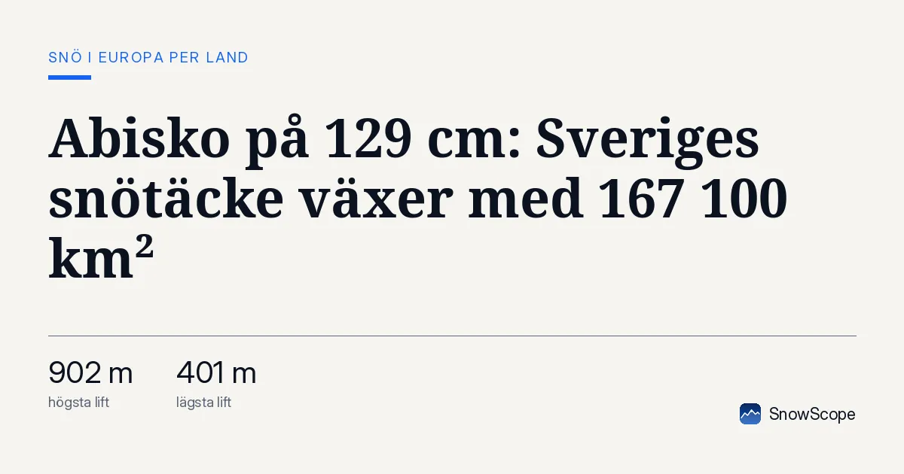

Abisko på 129 cm: Sveriges snötäcke växer med 167 100 km²
Abisko håller 129 cm snö på sin högsta punkt—19 procent över normalt för mitten av november—och visar att snölagring etableras redan i tidig säsong. Men den större historien från förra veckan är slående: Sveriges snötäckta område växte med 167 100 km² när ett vintersystem drog in, från mindre än 28 procent av kartlagda området till nästan 79 procent.
Se snöprognosen för Abisko live i SnowScope-appenSnödjup, pudervarningar och 3D-kartan, gratis.
Tidig säsong, tidig lagring
Abiskos 129 cm, mätt på 652 meter, är en enstaka mätpunkt men återspeglar höjdtrenden över svenska fjäll. Mätningen ligger 19 procent över normalt för november mittpunkt från tidigare vintrar—ett tecken på att höstens varma period slutat och frost etablerar sig.
För en snöhydrolog spelar detta roll: när lagret växer tidigt och förblir stabilt, upprätthåller bäckar flöde genom torra månader framöver. Snön här är en vattenreserv redan inlagrad i bergen, inte längre rinnande nerför som regn.
| Skidort | Snödjup | Nysnö, 72 h | På väg, kommande dagar | Topp |
|---|---|---|---|---|
| Abisko | 129 cm | 3 cm | 12 cm | 902 m |
| Björkliden | 129 cm | 3 cm | 12 cm | 933 m |
| Huså | 33 cm | 4 cm | 3 cm | 677 m |
| Almåsa | 31 cm | 3 cm | 3 cm | 702 m |
| Brantberget | 31 cm | 0 cm | 7 cm | 83 m |

En vecka, en dramatisk förändring
För sju dagar sedan höll bara 89 890 km² av det svenska landskapet snö—mindre än 28 procent av det område vi modellerar. I dag är 256 990 km² vit—nästan 79 procent.
Ökningen med 167 100 km² på en vecka visar ett system som för snö från sky till mark stadigt över ett stort område. Snögränsen, den lägsta höjd där snö finns kvar, föll till 100 meter. Vintern är här.

Snön staplas med höjden
Snöfallet fördelas inte jämnt. Under 500 meter höller bara 71 procent av marken snö och genomsnittliga djupet är 8 cm—en tunn reserv. Från 500 till 1 000 meter når täckningen 100 procent och djupet växer till 14 cm.
Ännu högre accelererar stackningen kraftigt: 42 cm från 1 000 till 1 500 meter, och 68 cm över 1 500 meter. Fjällen över 1 500 meter lagrar åtta gånger mer vatten per kvadratmeter än låglandet, vilket förklarar varför höga fjäll som Abisko och Björkliden håller 129 cm och kommer att mata bäckar och reservoarer genom våren när lägre mark länge sedan smält bort.
Nysnön matar stabil uppbyggnad
De senaste tre dagarna gav upp till 9 cm nysnö, med Hemavans fjäll som registrerade 19 cm—ett område där nederbörd var som mest. Den 18 november väntas den tyngsta snögdagen: 11 cm.
Över de kommande tre dagarna från nu är 15 cm sannolikt. Modellen visar ingen paus i denna trend: veckan 24–30 november kan lägga till 18 cm till. Detta tillförlitliga vattentillskott fortsätter att öka snölagret och fylla fjällreservoarer långt före normalt för säsongen.
Redo nu, djupare snart
Abisko och Björkliden håller båda 129 cm och leder alla svenska skidorter. Dessa högnordliga platser är redo för säsongen nu. Skidorter längre ner—Huså (33 cm), Almåsa (31 cm) och Brantberget (31 cm)—har gjort solida starter men saknar det djup som behövs ännu.
Det uppmuntrande faktum är att alla fem uppmätta skidorter ligger över normalt för datumet. I slutet av november, när prognosen snö fortsätter att falla, kommer även de lägre platserna ha robusta underlag, och höga fjällen närmar sig de djupa snölagren som upprätthåller avrinningen in i sommaren.
Tips för skidåkare
- Höjden bestämmer snödjupet nu: 68 cm över 1 500 meter jämfört med 8 cm under 500 meter. Välj höga fjäll för tillförlitliga underlag; förvänta luckor i täcningen och bar mark i låglandet.
- Nysnö är prognostiserad den 18 november (11 cm). Innan du lämnar märkta backar efter mycket snö, kontrollera den officiella lavinprognosen för ditt område.
- Tidig säsongssnö vilar ofta på tunna underlag eller stenar under. Snötäckningen under 500 meter är bara 71 procent—snöfria fläckar är vanliga. Åk försiktigt i lägre terräng.
- Abisko och Björkliden är redo på 129 cm. Lägre skidorter behöver mer snö för att stabiliseras. Om du är flexibel, vänta tills efter 18 november när inkommande snöfall gör underlaget fastare.
Om siffrorna
Snödjupen för skidorterna är det djupaste snötäcket på ortens övre backar enligt SnowScopes snömodell (cirka 1 km, körning från 16 november); de är uppskattningar för ett område, inte en mätning på en punkt. Stationsvärden är mätningar på det angivna datumet. Prognoser kan ändras. Läs alltid den officiella lavinprognosen innan du åker offpist.
Citera den här rapporten
För forskning, undervisning eller press: siffrorna och diagrammen får återanvändas fritt under CC BY 4.0 med den här källhänvisningen.
SnowScope (2026), Abisko på 129 cm: Sveriges snötäcke växer med 167 100 km², https://snowscope.app/blog/sv/2026/11/sweden-snow-report-16-november-2026.html, hämtad 2026-11-16
SnowScope (Atlas Labs). (2026, November 16). Abisko på 129 cm: Sveriges snötäcke växer med 167 100 km². SnowScope snow reports. https://snowscope.app/blog/sv/2026/11/sweden-snow-report-16-november-2026.html
BibTeX
@misc{snowscope2026swedensnowreport16novemb,
author = {{SnowScope (Atlas Labs)}},
title = {Abisko på 129 cm: Sveriges snötäcke växer med 167 100 km²},
year = {2026},
month = nov,
howpublished = {\url{https://snowscope.app/blog/sv/2026/11/sweden-snow-report-16-november-2026.html}},
note = {Published 2026-11-16 20:42 UTC; accessed 2026-11-16}
}· CC BY 4.0 · Metoder, data och verktyg →
Abisko: snö och temperatur efter höjd, i vinter jämfört med förra (verktyg) →
Följ Abisko
Gratis: ett meddelande när nysnö är på väg, och prognosen varje morgon.